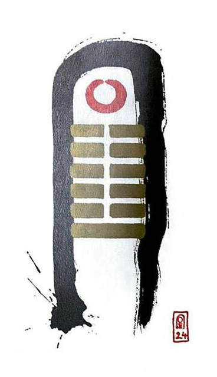

지뢰복
소길 5
하던 일을 다시 한다
순환의 새로운 시발점이다전환점. 회복의 시기다추운 겨을이 지나고 기다리던 따뜻한 봄이 온다잃어버린 물건을 찾고 헤어졌던 사람이 돌아오는 상황을 표현한 그림
새로운 시작.돌아오다.회복.전환점.새로운 주기의 시작. 재생. 회생.새로운 운. 원상복귀. 재결합.
연애운
관계가 전처럼 좋아짐.과거의 인연을 다시 만남
사업운
빛이 찾아온다.점차 밝은 기운.전에 하던 일(꿈)다시 도전하는모습
속마음
썸점점 호감이 커지고 발전하고 싶은 마음
1년 이상권태스러운 마음이 회복되는 마음
이별 후재회하고 싶은 마음 크다
솔로연애운
새로운 이성 생길 확률 크다
건강운
중병도 회복 가능하나 재발 가능성은 있다. 소화기.신경계통 주의